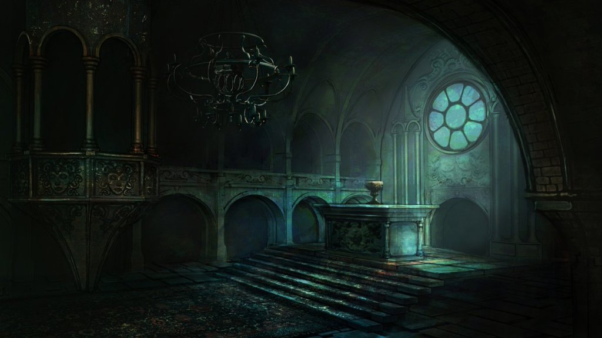

As turns the light they discover where that smell is coming from. They open the door that has been concluded to be the source of the stench and discover that it looks like a place of worship ,it doesnt look like one they have been to ever before as there are weird sculptures and carvings all over the walls, they can see a banner which has some sort of cults name it reads "Esoteric Order of Dagon". there is a book sat atop the Altar and they decide to go and look at the book to see if they can learn more about this "Order of Dagon".
